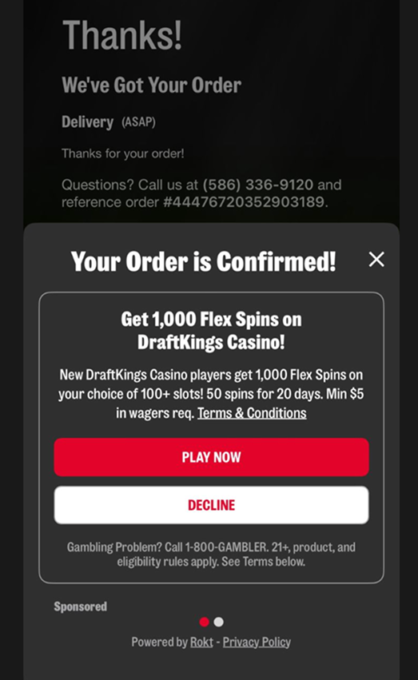

-
You could decline.Sandwich checkout · post-order interstitial Sponsored

screenshot →assets/rung1-checkout2.png(post-checkout “Sponsored” ad + Decline)The version you already recognize. -
You couldn't skip.My hospital's billing line · inbound voice agent disguisedAgent Hi, this is hospital billing. You have a bill to pay — would you like to take care of it now?You Yes, I'd like to pay.Agent First — we can offer you a discount on a medic-alert device. Would you like to hear more?You No. I just want to pay my bill.Agent …loops back to the offer — never takes the payment.They called me to collect. I went to comply, and got an unskippable pitch before they'd take my money. I never reached the payment.
-
You weren't even there.Coding agent · scaffolding your app invisibleNo label, no decline. The agent chose for you.
-
the pattern
So I built the layer that fixes it.
Ads don't die when you remove them. They climb a layer, to where you can't skip them. By the top rung, the ad is the agent's advice.